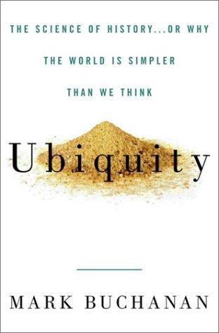

1914年6月28日上午，萨拉热窝，一辆载着奥匈帝国皇储弗朗茨·斐迪南大公的汽车拐错了一个弯，在街角停下倒车。坐在对面咖啡馆里的加夫里洛·普林西普抓住这个偶然的机会，近距离开枪射杀了大公夫妇。这次暗杀引爆了第一次世界大战，改变了数亿人的命运。物理学家马克·布坎南（Mark Buchanan）以这个场景开篇，提出了一个贯穿全书的核心问题：究竟是什么力量让一件看似微不足道的偶发事件，引发了如此巨大的连锁反应？答案并不在于那个错误的转弯本身，而在于整个系统早已处于一触即发的"临界状态"。
布坎南拥有弗吉尼亚大学物理学博士学位，曾任《自然》（Nature）和《新科学家》（New Scientist）杂志编辑。本书首版于2000年，英国版副标题为"历史的科学——或者说为什么世界比我们以为的更简单"。全书围绕一个核心概念展开：自组织临界性（self-organized criticality）。这个理论最早由丹麦物理学家佩尔·巴克（Per Bak）在1987年提出。巴克用一个沙堆模型来说明这个原理——往沙堆上一粒一粒地加沙子，沙堆会自行演化到一种临界状态，在这种状态下，任何一粒新加的沙子都可能引发崩塌，而崩塌的规模完全无法预测。小崩塌频繁发生，大崩塌罕见但绝非不可能，二者之间的频率关系遵循幂律分布——这意味着极端事件的发生概率远高于正态分布的预期。
布坎南的雄心在于，将这一物理学发现推广到远超自然科学的范畴。他用大量案例证明，地震的能量分布、森林火灾的面积、物种灭绝的规模、交通堵塞的蔓延、股市崩盘的烈度，乃至战争的伤亡人数，都呈现出惊人相似的幂律特征。这些看似毫无关联的现象背后，存在一个共同的数学结构：复杂系统会自发地组织到"不稳定的刀锋"之上，处于这种状态的系统，任何微小的扰动都可能造成与其起因完全不成比例的后果。关键的推论是：极端事件不是某种特殊原因的产物，大地震和小地震的触发机制并无本质区别，差异仅在于系统当时的内部状态。因此，试图预测具体哪一次扰动会引发灾难，从根本上就是不可能的。
正如布坎南在书中所写："认识到人类动荡的历程未必是某种深层恶意疯狂的产物，而是普通人性与简单数学的结果，这至少是迈向更深理解的一步。"这个论点令人不安，却也令人清醒——历史中那些剧烈的断裂，并非来自某个恶魔般的特殊推手，而是复杂系统运行的内在逻辑。
这本书在投资界获得了不同寻常的关注。伯克希尔·哈撒韦的投资经理托德·库姆斯（Todd Combs）在2023年的一次播客访谈中透露，这是他在初次会面时分别送给沃伦·巴菲特和查理·芒格的第一本书。库姆斯说："我们都倾向于以线性方式思考生活和风险，但实际上，它更接近于幂律——一种对数型函数。"他解释说，当严重程度翻倍时，频率通常会以更大的比例下降，无论是飓风、战争还是其他灾难，概莫能外。芒格在收到书时已经读过它——这两位投资大师后来在讨论中反复提到"深度虚值看跌期权"的概念，正是这本书帮助他们更深刻地理解了极端风险事件的本质。
自组织临界性理论的创始人佩尔·巴克本人对此书给出了极高评价："这是我希望自己写出来的书。"（This is the book I wish I had written.）《新科学家》杂志则评价道："布坎南成功地做到了其他人未能做到的事……他能够在不损害科学严谨性的前提下，清晰传达这种全新的思维方式。"
对于投资者和管理者而言，这本书的核心启示是：我们生活在一个幂律主导的世界里，而非正态分布的世界。"百年一遇"的崩盘每隔几年就会出现，四个标准差以外的市场波动并不像教科书所说的那样几乎不可能发生。理解这一点，意味着从根本上重新审视风险管理的框架——不是去预测下一场危机何时到来，而是承认系统始终处于临界状态，极端事件是常态而非例外，并据此构建足够的安全边际。这正是巴菲特和芒格一生所践行的投资哲学，也是这本仅两百余页的科普著作之所以在价值投资界持续流传的原因。